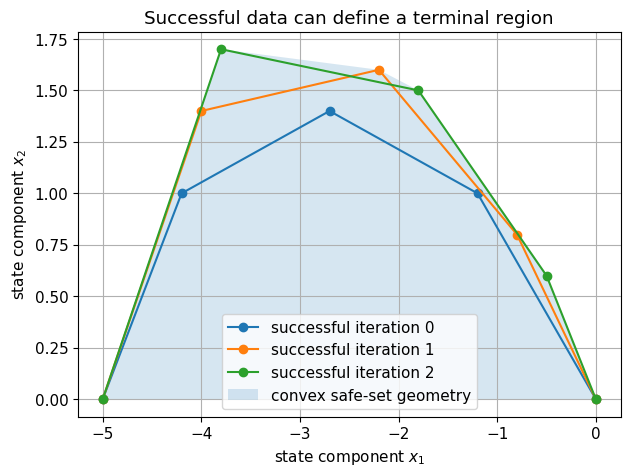
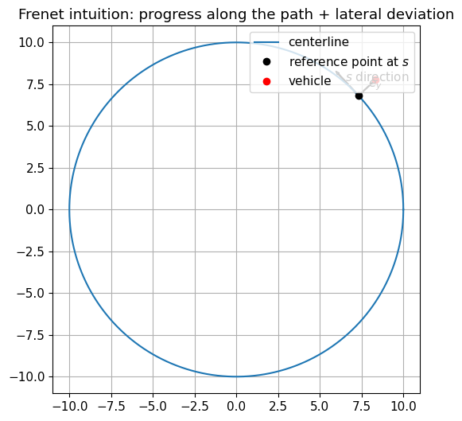

This notebook builds the mathematical vocabulary and mental models used throughout the repository. It is intentionally more than a list of formulas: the goal is to understand how dynamics, optimization, constraints, stability, invariant sets, dynamic programming, and learning fit together.
By the end, you should be able to explain every link in the following chain:
\boxed{\text{terminal set + terminal value}}
\;\longrightarrow\;
\boxed{\text{recursive feasibility + stability}}
\;\longrightarrow\;
\boxed{\text{learn those ingredients from data (LMPC)}}.
Big idea. Classical feedback tells us how to react to the current state. MPC adds two ingredients that become essential for complex systems: prediction and explicit constraint handling.
Learning objectives
After working through this notebook, you should be able to:
distinguish nonlinear, LTI, LTV, and affine discrete-time models;
Part V — Stability and LQR — V.1 Continuous-time and discrete-time stability tests are different · V.2 Infinite-horizon LQR and the DARE
Part VI — Reachability and invariant sets — VI.1 Predecessors: “from where can I enter this set in one step?” · VI.2 Positive invariance versus control invariance · VI.3 A terminal invariant set for constrained LQR
Part VII — Why terminal ingredients matter in MPC — VII.1 The standard terminal-set stability mechanism · VII.2 Recursive feasibility: the shifted-sequence argument · VII.3 Stability: the optimal MPC value as a Lyapunov function
Part IX — From designed terminal ingredients to Learning MPC — IX.1 Why learn a terminal set or terminal value? · IX.2 Sampled safe set · IX.3 Convex safe set and barycentric coordinates · IX.4 Learning a terminal value from stored cost-to-go
The state is a sufficient internal description: once x_k and future inputs are known, the model can predict future states. An output equation may be added,
y_k=h_k(x_k,u_k),
but MPC is most naturally formulated in state space.
Models we will repeatedly use
LTI (linear time invariant)
x_{k+1}=Ax_k+Bu_k.
Affine
x_{k+1}=Ax_k+Bu_k+c.
LTV (linear time varying)
x_{k+1}=A_kx_k+B_ku_k+c_k.
Nonlinear
x_{k+1}=f(x_k,u_k).
The later racing notebooks deliberately move between these descriptions: the simulated vehicle may be nonlinear, while the optimizer can use a locally identified or linearized prediction model.
Important: the plant/test model and the prediction model do not have to coincide. MPC optimizes with a model; the real system evolves according to physics. Model mismatch is therefore a central practical issue.
I.1.1 Running example: a sampled double integrator
Let position be p and velocity be v. With constant acceleration a over one sample of duration T_s,
This tiny system is useful because it already contains the main MPC difficulties: the input affects velocity immediately, position only indirectly, and physical limits naturally create constraints on both states and inputs.
Ts = 1.0
A = np.array([[1.0, Ts],
[0.0, 1.0]])
B = np.array([[0.5 * Ts**2],
[Ts]])
x0 = np.array([-5.0, 0.0])
U_demo = np.array([[1.0], [1.0], [0.0], [-1.0], [-1.0]])
X_demo = rollout(A, B, x0, U_demo)
print("A =\n", A)
print("B =\n", B)
print("trajectory [position, velocity] =\n", X_demo)
fig, ax = plt.subplots()
ax.plot(X_demo[:, 0], X_demo[:, 1], "o-")
ax.set_xlabel("position $p$")
ax.set_ylabel("velocity $v$")
ax.set_title("A trajectory is constrained by dynamics: states cannot be chosen independently")
plt.show()
In the condensed formulation, the future states are eliminated using
X=\mathcal S_xx_0+\mathcal S_uU.
The optimization variable is then only U.
In the sparse/uncondensed formulation, both X and U remain optimization variables, and the dynamics are imposed as equality constraints.
Neither formulation changes the control problem; they only change its numerical representation. Sparse formulations often scale better for long horizons and structured solvers, whereas condensed QPs are convenient for small/medium linear MPC problems.
Part III — Optimization and finite-horizon optimal control
III.1 Anatomy of a constrained optimization problem
Here z is the decision variable. In optimal control, z may contain a complete input trajectory, a state trajectory, logical variables, or combinations of them.
Convexity matters
If
f is convex,
each inequality function g_i is convex,
each equality constraint h_j is affine,
then the problem is convex. Any local optimum is global.
must always hold. If temporary violation is physically tolerable, introduce a slack \epsilon_k\ge0:
H_xx_k\le h_x+\epsilon_k,
and penalize it, e.g.
J\leftarrow J+\rho\sum_k\|\epsilon_k\|_1.
Softening can protect against infeasibility, but it does not magically make a truly safety-critical constraint safe to violate. The modeling decision must reflect physics.
III.3 Constrained finite-time optimal control (CFTOC)
For a general discrete-time system,
x_{k+1}=f(x_k,u_k),
a finite-horizon optimal control problem can be written
\ell(x,u) is the stage cost: what is expensive now?
V_f(x_N) is the terminal cost: what is the estimated price of the future beyond the prediction horizon?
\mathcal X_f is the terminal set: where must the prediction end so that the future can still be handled safely/stably?
The optimal solution is an entire open-loop sequence
U^*(x_0)=\{u_0^*,u_1^*,\ldots,u_{N-1}^*\}.
CFTOC by itself is an open-loop planning problem. MPC converts it into feedback by resolving it repeatedly.
Part IV — Receding horizon control
IV.1 MPC is an optimization-generated feedback law
At time t:
measure/estimate the current state x(t);
solve the horizon-N optimal control problem;
obtain u_{0|t}^*,\ldots,u_{N-1|t}^*;
apply only
\boxed{u(t)=u_{0|t}^*};
discard the unused tail, move to t+1, and solve again.
This is the receding horizon principle.
The resulting feedback law is implicitly defined by optimization:
\kappa_N(x)=u_0^*(x).
The optimizer is therefore not an offline trajectory generator; it is part of the controller.
Why re-optimize?
Because the next measured state is rarely exactly the predicted state. Re-optimization incorporates disturbances, estimation errors, model mismatch, and changing references/constraints.
A controller can be feasible now but fail to remain feasible later. Recursive feasibility is the stronger closed-loop property.
IV.2.3 Constraint satisfaction
If the optimization model is exact and the applied input is the first component of a feasible sequence, current-step hard constraints are satisfied. Under uncertainty, this conclusion needs robust/tube/chance-constraint arguments; nominal MPC alone is not a robust guarantee.
IV.2.4 Stability
Feasibility only says that a legal trajectory exists. Stability says something about asymptotic behavior of the closed loop. A feasible MPC controller need not automatically stabilize the desired equilibrium.
A common pitfall: “The optimizer solved successfully” is not a stability proof.
Part V — Stability and LQR
V.1 Continuous-time and discrete-time stability tests are different
For the continuous-time LTI system
\dot x=Ax,
asymptotic stability requires A to be Hurwitz:
\Re\lambda_i(A)<0.
For the discrete-time LTI system
x_{k+1}=Ax_k,
asymptotic stability requires A to be Schur:
\boxed{\rho(A)<1}.
Discrete-time Lyapunov condition
Let
V(x)=x^\top Px,\qquad P\succ0.
Then
\Delta V
=V(x_{k+1})-V(x_k)
=x_k^\top(A^\top PA-P)x_k.
If there exists P\succ0 such that
A^\top PA-P\prec0,
the origin is asymptotically stable.
For an exponentially stable discrete-time LTI system, one can obtain
Under the usual stabilizability/detectability assumptions, the optimal stationary feedback is
\boxed{u=-Kx},
where
K=(R+B^\top PB)^{-1}B^\top PA
and P solves the discrete algebraic Riccati equation (DARE)
\boxed{
P=A^\top PA
-A^\top PB(R+B^\top PB)^{-1}B^\top PA
+Q.
}
The closed-loop matrix is
A_{\mathrm{cl}}=A-BK.
A fundamental identity is
\boxed{
A_{\mathrm{cl}}^\top P A_{\mathrm{cl}}-P
=-(Q+K^\top RK).
}
Therefore, with V(x)=x^\top Px,
V(x^+)-V(x)=-\ell(x,-Kx)<0
away from the origin. This identity is precisely why the LQR value function is such a natural terminal cost for linear-quadratic MPC.
K, P_lqr, eig_cl = dlqr(A, B, Q, R)
Acl = A - B @ K
residual = Acl.T @ P_lqr @ Acl - P_lqr + Q + K.T @ R @ K
print("K =", K)
print("P =\n", P_lqr)
print("closed-loop eigenvalues =", eig_cl)
print("spectral radius =", np.max(np.abs(eig_cl)))
print("DARE/Lyapunov identity residual norm =", np.linalg.norm(residual))
# Show monotonic decrease of V along the LQR closed loop.
x = np.array([-5.0, 1.5])
Vs = []
Xs = [x.copy()]
for k in range(25):
Vs.append(x @ P_lqr @ x)
u = -K @ x
x = A @ x + B @ u
Xs.append(x.copy())
Vs.append(x @ P_lqr @ x)
fig, ax = plt.subplots()
ax.semilogy(Vs, "o-")
ax.set_xlabel("time step")
ax.set_ylabel(r"$V(x_k)=x_k^\top P x_k$")
ax.set_title("LQR value function decreases along the nominal closed loop")
plt.show()
So the LQR pair (K,P) naturally satisfies the required local decrease condition; the remaining task is to choose an invariant terminal set where the constraints are also satisfied.
What this theorem does not say
It does not say every MPC formulation is stable.
It does not say a long horizon automatically proves stability.
It does not make nominal guarantees robust to disturbances/model error.
It does not remove the need to check feasibility of the initial condition.
These distinctions become crucial in real autonomous systems.
Part VIII — Dynamic programming and value functions
VIII.1 Bellman's principle of optimality
For
x_{k+1}=f(x_k,u_k)
and finite-horizon cost
J=
g_N(x_N)+\sum_{k=0}^{N-1}g_k(x_k,u_k),
define the optimal cost-to-go J_k^*(x) from stage k onward.
This is Bellman's equation for deterministic finite-horizon optimal control.
The deep connection to MPC
An ideal infinite-horizon value function contains the exact cost of the entire future. MPC cannot generally compute that online, so it truncates the horizon and inserts a terminal costV_f as an approximation of the missing tail.
That is why terminal costs are not arbitrary tuning terms: conceptually they approximate a value function.
VIII.1.1 Control vocabulary versus RL vocabulary
The same mathematics often appears under different names.
Control / DP language
RL language
system
environment
controller / decision maker
agent
control input
action
stage cost
negative reward
cost-to-go / value function
value function
state-action cost / Q-factor
Q-value
solve DP using a known model
planning
infer value/policy from interaction/data
learning
finite task repetition
episode
The vocabulary changes, but Bellman's principle remains the organizing equation.
Curse of dimensionality
Dynamic programming recursively solves low-dimensional decision problems, but the value function must be represented over the state space. A grid with M points per dimension requires M^n state samples in n dimensions. This exponential growth motivates approximation, learning, and structured optimization methods.
Part IX — From designed terminal ingredients to Learning MPC
IX.1 Why learn a terminal set or terminal value?
Classical stabilizing MPC asks us to supply:
a terminal set \mathcal X_f that is invariant/admissible;
a terminal cost V_f with a suitable decrease property.
For constrained nonlinear systems these objects can be difficult to compute.
Learning MPC (LMPC) targets a special but important situation:
the same control task is repeated over iterations — regulation runs, repeated path following, manufacturing cycles, racing laps, etc.
If an earlier iteration completed the task safely, every state visited on that successful trajectory comes with something extremely valuable:
a known feasible continuation to the goal;
an observed cost-to-go along that continuation.
LMPC turns these facts into terminal ingredients.
IX.2 Sampled safe set
Let iteration i generate a successful trajectory
\mathbf x^i=\{x_0^i,x_1^i,\ldots,x_{T_i}^i\}
with associated admissible inputs
\mathbf u^i=\{u_0^i,\ldots,u_{T_i-1}^i\}.
After iterations 0,\ldots,j, a sampled safe set can be formed from all states on successful trajectories:
\boxed{
\mathcal{SS}^j
=
\bigcup_{i=0}^{j}
\bigcup_{t=0}^{T_i}
\{x_t^i\}
\quad
(\text{possibly augmented by a terminal region }\mathcal O).
}
Why “safe”? Because from each stored state we already know at least one admissible sequence that completed the task: the remainder of the historical trajectory.
For deterministic repeated tasks, this creates a data-driven certificate of existence of a feasible continuation for the sampled points.
IX.3 Convex safe set and barycentric coordinates
For a linear system with convex state/input constraints, it is often useful to convexify the sampled states:
Why does convexification help in the linear/convex setting? If each stored point x_r has an admissible continuation/input, then convex combinations of states can be propagated by convex combinations of the corresponding inputs. Linearity and convex constraints preserve admissibility. Under the standard assumptions, this makes the convex safe set control invariant.
# Geometry only: visualize sampled safe states and their convex hull.
# The points mimic states collected from several successful iterations.
traj1 = np.array([[-5.0, 0.0], [-4.2, 1.0], [-2.7, 1.4], [-1.2, 1.0], [0.0, 0.0]])
traj2 = np.array([[-5.0, 0.0], [-4.0, 1.4], [-2.2, 1.6], [-0.8, 0.8], [0.0, 0.0]])
traj3 = np.array([[-5.0, 0.0], [-3.8, 1.7], [-1.8, 1.5], [-0.5, 0.6], [0.0, 0.0]])
pts = np.vstack([traj1, traj2, traj3])
hull = ConvexHull(pts)
Hpts = pts[hull.vertices]
fig, ax = plt.subplots(figsize=(7,5))
for i, tr in enumerate([traj1, traj2, traj3]):
ax.plot(tr[:,0], tr[:,1], "o-", label=f"successful iteration {i}")
ax.fill(Hpts[:,0], Hpts[:,1], alpha=0.18, label="convex safe-set geometry")
ax.set_xlabel("state component $x_1$")
ax.set_ylabel("state component $x_2$")
ax.set_title("Successful data can define a terminal region")
ax.legend()
plt.show()

IX.4 Learning a terminal value from stored cost-to-go
For a stored trajectory i, define the realized cost-to-go from time t:
LMPC is not synonymous with deep reinforcement learning. In the formulation studied here, the “learning” can be entirely geometric and optimization-based: successful trajectories supply terminal feasibility and terminal performance information.
IX.4.1 Classical MPC, LMPC, and RL — one conceptual map
Question
Classical MPC
Learning MPC
RL / approximate DP
Is a model used online?
yes
yes (possibly learned/local)
may be model-free or model-based
Constraints explicit in online optimization?
yes
yes
not automatically
Terminal knowledge
designed \mathcal X_f,V_f
learned from successful data
value/policy approximation
Main learning object
none necessarily
safe set / terminal value / possibly model
value, Q-function, policy, model
Repeated task useful?
not required
central
often episodic but not required
This table is intentionally conceptual; many modern methods blur these categories.
Part X — Preview: autonomous racing in Frenet coordinates
X.1 Why change coordinates?
For path-following and racing, global Cartesian coordinates (X,Y) are not always the most natural coordinates for optimization. If the track centerline is parameterized by arc length s, define Frenet-type errors
(s,e_y,e_\psi),
where
s: progress along the path;
e_y: lateral deviation from the centerline;
e_\psi: heading error relative to the path tangent.
A track boundary becomes a simple constraint such as
|e_y(s)|\le W(s).
A minimum-time raceline problem then trades off:
progress/lap time;
track geometry and curvature \kappa(s);
vehicle dynamics;
tire/input limits;
track boundaries.
The later racing notebooks use this geometry to bridge optimal control, MPC, local model learning, and repeated-task learning.
# A tiny geometric preview of Frenet coordinates on a circular centerline.
theta = np.linspace(0, 2*np.pi, 400)
Rtrack = 10.0
xc, yc = Rtrack*np.cos(theta), Rtrack*np.sin(theta)
th = 0.75
center = np.array([Rtrack*np.cos(th), Rtrack*np.sin(th)])
tangent = np.array([-np.sin(th), np.cos(th)])
normal = np.array([np.cos(th), np.sin(th)])
ey = 1.4
vehicle = center + ey*normal
fig, ax = plt.subplots(figsize=(6,6))
ax.plot(xc, yc, label="centerline")
ax.plot(*center, "ko", label="reference point at $s$")
ax.plot(*vehicle, "ro", label="vehicle")
ax.arrow(*center, *(2.0*tangent), width=0.05, length_includes_head=True)
ax.arrow(*center, *(ey*normal), width=0.04, length_includes_head=True)
ax.text(*(center + 1.2*tangent), "$s$ direction")
ax.text(*(center + 0.55*ey*normal), "$e_y$")
ax.set_aspect("equal")
ax.set_title("Frenet intuition: progress along the path + lateral deviation")
ax.legend(loc="upper right")
plt.show()

Part XI — Common conceptual pitfalls
XI.1 Things worth catching before an implementation review
Discrete stability is not \Re\lambda<0. That is continuous time. Discrete time requires |\lambda|<1.
With u=-Kx, the closed-loop matrix is A-BK. A plus sign corresponds to a different feedback convention.
A feasible MPC problem is not automatically stable. Feasibility and stability are different properties.
A long horizon is not a proof. It can improve behavior, but a guarantee needs assumptions/analysis.
A terminal cost is not just an extra weight. It represents the unmodeled tail of the horizon and can support a Lyapunov proof.
A terminal set is not merely a final box. In stabilizing MPC it is usually designed to be admissible and invariant under a local controller.
Nominal constraint satisfaction is not robust safety. Disturbances/model error require additional design.
Control invariance has an existential input quantifier.\forall x\in\mathcal C,\exists u.
LMPC learning does not require a neural network. Safe sets and value functions can be learned directly from successful trajectories.
Prediction model \neq plant. MPC performance and robustness depend on the gap between them.
Part XII — Check your understanding
Try answering each question before opening the answer.
Q1. Why is MPC a feedback controller if it solves an open-loop optimization?
Answer
At each sampling instant the optimization is re-solved using the new measured/estimated state. The applied law is u(t)=u_{0|t}^*(x(t)), so the first optimizer output depends on the current state and defines an implicit feedback map.
Q2. What is the algebraic backbone of condensed linear MPC?
Answer
The stacked prediction identity X=\mathcal S_xx_0+\mathcal S_uU, which eliminates predicted states from the optimization and expresses them as an affine function of the initial state and future inputs.
Q3. When is a linear MPC problem a convex QP?
Answer
With linear/affine dynamics, a convex quadratic objective (Q,P\succeq0, R\succ0) and affine/polyhedral constraints. Then the condensed Hessian is positive semidefinite (typically definite because of R\succ0) and constraints are linear.
Q4. Difference between feasible and recursively feasible?
Answer
Feasible means an admissible sequence exists at the current state. Recursive feasibility means applying the controller keeps the next state inside the set of states from which the optimization remains feasible.
Q5. What makes the standard terminal-set proof work?
Answer
A local terminal controller that keeps \mathcal X_f invariant while satisfying constraints, plus a terminal cost whose decrease under that controller dominates the stage cost. The shifted optimal sequence plus one terminal control move is then feasible at the next step.
Q6. Why does LQR naturally provide an MPC terminal cost?
Answer
The DARE solution gives V_f=x^\top Px and u=-Kx satisfying V_f((A-BK)x)-V_f(x)=-x^\top(Q+K^\top RK)x=-\ell(x,-Kx).
Q7. Why is a sampled LMPC state “safe” in the deterministic repeated-task setting?
Answer
Because it belongs to a previously successful admissible trajectory. The remainder of that stored trajectory is a known feasible continuation from that state to the task completion region.
Q8. Why can convexification preserve safety/control invariance in the linear-convex LMPC setting?
Answer
Linearity maps convex combinations of states/inputs to convex combinations of next states, while convex constraints preserve admissibility. Thus barycentric combinations of known safe transitions remain admissible under the standard assumptions.
Q9. How are Bellman value functions related to MPC terminal costs?
Answer
The exact infinite-horizon value function represents the optimal future tail cost. Finite-horizon MPC truncates the future and uses V_f as an approximation/certificate for the omitted tail.
Q10. What changes first when moving from textbook MPC to a real vehicle?
Answer
The assumptions: the state is estimated rather than perfectly known, the prediction model is imperfect, disturbances exist, constraints may be uncertain, actuators have dynamics/delays, and computation is finite. These motivate observers, robust/stochastic MPC, model adaptation, safety monitors, and real-time implementation analysis.
Part XIII — Exercises
Exercise 1 — Derive the prediction matrices by hand
write x_1,x_2,x_3 explicitly and construct \mathcal S_x,\mathcal S_u for N=3. Verify numerically against prediction_matrices.
Exercise 2 — Condense a state constraint
Suppose |p_k|\le 6 for every predicted state. Write this as H_xx_k\le h_x, stack it over the horizon, and derive the inequality in U.
Exercise 3 — Stability convention
Take an arbitrary feedback row K=[k_1\;k_2]. Compute the eigenvalues of both A-BK and A+BK. Explain why only one corresponds to the convention u=-Kx.
Exercise 4 — Terminal decrease
Using the numerical LQR matrices computed above, draw 100 random states x and verify
V((A-BK)x)-V(x)=-x^\top(Q+K^\top RK)x
up to numerical precision.
Exercise 5 — Safe-set reasoning
Pick one state on traj2. Explain the exact known feasible continuation. Then pick a point strictly inside the plotted convex hull that was never sampled. Explain why claiming it is safe requires the linearity/convexity assumptions; historical data alone is not enough for arbitrary nonlinear dynamics.
Exercise 6 — Think like a controls engineer
For each of the following, decide whether the statement concerns feasibility, stability, invariance, optimality, or robustness:
“The QP has a solution at every closed-loop time step.”
“The state converges to the origin.”
“Once inside this set, the local controller never leaves it.”
“No other admissible horizon trajectory has a smaller finite-horizon cost.”
“Constraints remain satisfied for all disturbances in a prescribed set.”
Part XIV — Notation cheat sheet
Symbol
Meaning
x_k\in\mathbb R^n
state
u_k\in\mathbb R^m
control input
A,B
LTI state/input matrices
N
prediction horizon
X,U
stacked future states/inputs
\mathcal S_x,\mathcal S_u
stacked prediction matrices
\mathcal X,\mathcal U
admissible state/input sets
\mathcal X_f
terminal set
\ell(x,u)
stage cost
V_f(x)
terminal cost
V_N^*(x)
optimal finite-horizon MPC value
K
LQR gain under u=-Kx
P
DARE / quadratic value-function matrix
\rho(A)
spectral radius
\mathrm{Pre}(\mathcal S)
one-step predecessor of set \mathcal S
\mathcal{SS}^j
sampled safe set after LMPC iteration j
\mathcal{CS}^j
convex safe set
\lambda_r
barycentric coordinates
J_k^*(x)
Bellman optimal cost-to-go
(s,e_y,e_\psi)
Frenet progress, lateral error, heading error
Part XV — Scope and references
Scope. This notebook is a map of the whole series. It introduces the shared notation and, at the level needed to follow the later notebooks, the main ideas: discrete-time models and multi-step prediction, the QP form of linear-quadratic finite-horizon control, the receding-horizon principle, Lyapunov stability and LQR, predecessor and invariant sets, the terminal-set mechanism behind stabilizing MPC, Bellman's recursion, Learning MPC, and Frenet coordinates for racing. It assumes linear algebra, basic calculus and familiarity with state-space models. The derivations sketched here are developed in full, with numerical examples, in Notebooks 01–09.
References.
S. Boyd and L. Vandenberghe, Convex Optimization, Cambridge University Press, 2004: convexity, quadratic programs, duality.
F. Borrelli, A. Bemporad and M. Morari, Predictive Control for Linear and Hybrid Systems, Cambridge University Press, 2017: constrained finite-time optimal control, invariant sets, MPC feasibility and stability.
J. B. Rawlings, D. Q. Mayne and M. M. Diehl, Model Predictive Control: Theory, Computation, and Design, 2nd ed., Nob Hill Publishing, 2022: MPC theory and computation.
D. Q. Mayne, J. B. Rawlings, C. V. Rao and P. O. M. Scokaert, "Constrained model predictive control: Stability and optimality", Automatica, 36(6), 789–814, 2000: terminal ingredients and stability.
F. Blanchini and S. Miani, Set-Theoretic Methods in Control, 2nd ed., Birkhäuser, 2015: invariant and controllable sets.
H. K. Khalil, Nonlinear Systems, 3rd ed., Prentice Hall, 2002: Lyapunov stability.
D. P. Bertsekas, Dynamic Programming and Optimal Control, Vol. I, 4th ed., Athena Scientific, 2017: Bellman's recursion.
R. S. Sutton and A. G. Barto, Reinforcement Learning: An Introduction, 2nd ed., MIT Press, 2018: the reinforcement-learning view of value functions.
U. Rosolia and F. Borrelli, "Learning Model Predictive Control for Iterative Tasks. A Data-Driven Control Framework", IEEE Transactions on Automatic Control, 63(7), 1883–1896, 2018: sampled safe sets and learned terminal costs.
G. Perantoni and D. J. N. Limebeer, "Optimal control for a Formula One car with variable parameters", Vehicle System Dynamics, 52(5), 2014: minimum-time control in curvilinear (Frenet) coordinates.
For implementation details and reproducible examples, the later notebooks are the primary reference inside this repository.
A useful target before moving on: you should be able to derive X=\mathcal S_xx_0+\mathcal S_uU, explain the shifted-sequence feasibility proof, and state why P from the DARE is a natural terminal value matrix.